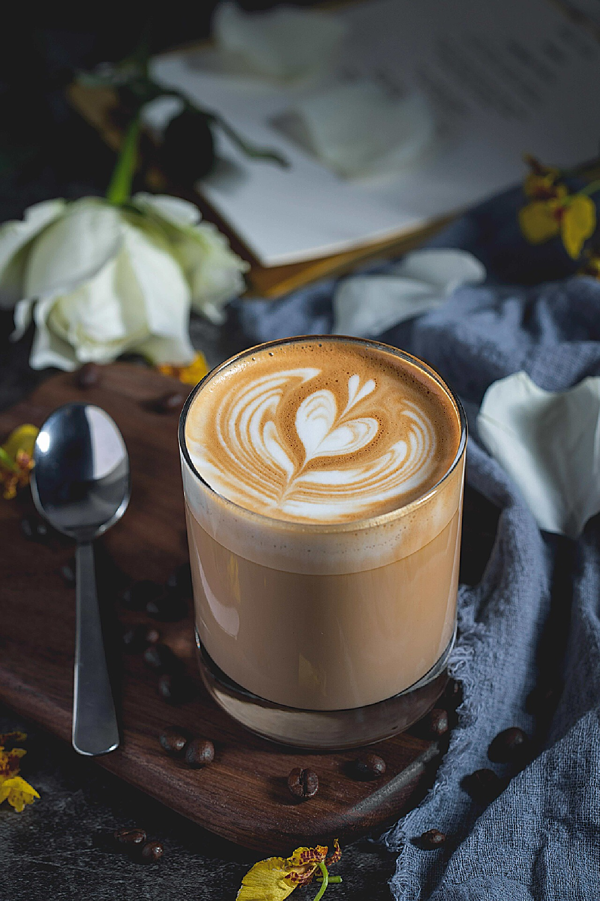

拿铁咖啡
拿铁为浓缩咖啡加热泡奶，牛奶中的乳脂肪能增加咖啡的甜感，醇感，口感顺滑。 拿铁（Latte）在意大利语里原意为“牛奶”，如果你在意大利点一杯“拿铁”而前面不加咖啡，那么服务生只会给你上一杯牛奶。现在很多冷饮店都会推出自己的“拿铁”系列，像“红茶拿铁”“抹茶拿铁”等等，其实就是奶茶而并没有咖啡的成分。 拿铁咖啡是意大利浓缩咖啡（Espresso）与牛奶的经典混合，意大利人也很喜欢把拿铁作为早餐的饮料。意大利人早晨的厨房里，照得到阳光的炉子上通常会同时煮着咖啡和牛奶。喝拿铁的意大利人，与其说他们喜欢意大利浓缩咖啡，不如说他们喜欢牛奶，也只有Espresso才能给普普通通的牛奶带来让人难以忘怀的味道。
制作方法
原料
深烘焙的咖啡豆适量（以马克杯标准制作的话，单杯约为7克咖啡粉）；意式专用咖啡机；牛奶
步骤
1.以热水浸泡杯子（温杯），使其温度上升后再倒掉多余的水分使用。更简单的方法是将咖啡杯置于意式咖啡机热量放置区，萃取浓缩时杯子的温度已经达到足够的要求。
2.将深烘焙的咖啡豆研磨后，将咖啡粉倒进填压器内用压粉器将咖啡压平，再将填压器扣住意式咖啡机萃取口，萃取出Espresso。萃取时注意将萃取口尽量贴住马克杯壁，这样能使Espresso的油脂形成得更具完备。萃取时间根据填压实际情况来看，一般为20~25秒不定。萃取的量为30ml。
3.取适量牛奶，将其置于意式浓缩咖啡机的蒸汽喷嘴下，使其制作成高温的牛奶与奶泡混合体。温度尽量控制好，超过90度可能会造成牛奶的沸腾，这样奶泡会全部被破坏掉。
4.将牛奶和奶泡混合体上下抖动，使奶泡尽可能集中在上方，这样比较容易控制好比例。将较粗的奶泡用勺刮掉，较粗的奶泡会破坏口感，对最终的成品咖啡外形也产生影响。
5.将合适比例的牛奶和奶泡混合体摇匀，使奶泡与牛奶完全融合。
6.最后将牛奶和奶泡均匀体倒入Espresso中，控制流量进行拉花，这样就完成了一杯意式拿铁。